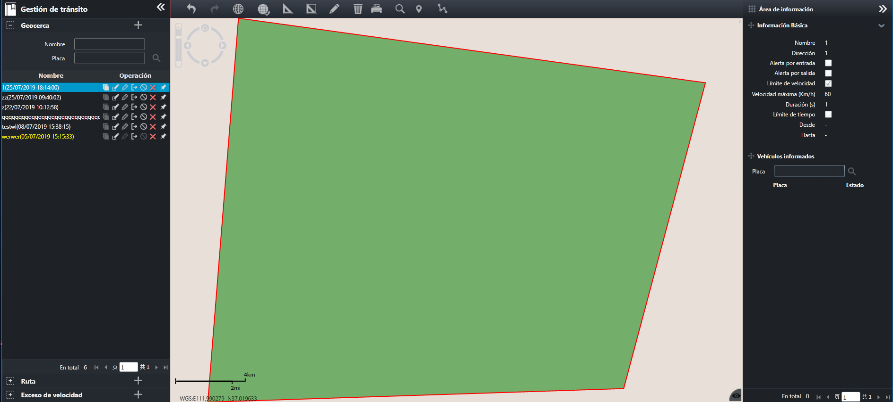

Valla electrónica.
Establece la valla electrónica y la aplica a los vehículos. Como la velocidad de conducción y el rango de acceso del vehículo
estarán restringidos por la valla electrónica. Si el vehículo infringe la valla electrónica existente, la información de alarma
correspondiente se informará a la plataforma de seguridad.
Haga clic en en la barra de menú de navegación izquierda para ingresar a la página
“Geocerca”, como se muestra a continuación.

Fig 53 Valla electrónica.